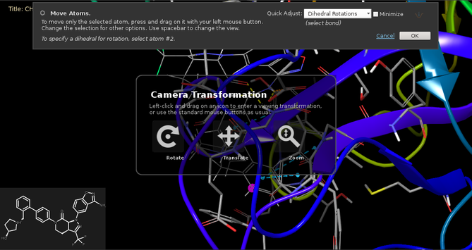

Rotation of the camera angle is performed with the middle mouse button, by default. If you are using a two-button mouse and have enabled three-button mouse simulation, you can use both mouse buttons to simulate the middle mouse button. If you prefer to use the left mouse button (or if you only have one mouse button), choose View → Transform Mode → Rotation before doing the rotation. Choose it again or press Esc to revert to the previous action for the left mouse button.
The axis of rotation is selected by a combination of keys and mouse movements. The middle mouse button on its own can be used to rotate about the x axis with vertical movement or the y axis with horizontal movement. Holding down the Shift key restricts the movement to either the x axis or the y axis, depending on the direction in which you first move the mouse. Holding down the Ctrl key selects rotation about the z axis.
If you have a trackpad, you can use the Ctrl key with a single-finger swipe for the default x and y rotation. Rotation about the z axis is done with both Shift and Ctrl.
Keyboard shortcuts (or items on the View → Rotate menu) can be used to rotate structures by a small increment (which can be set in the Preferences panel). The default shortcuts are described in the topic Using the Keyboard in Maestro.
It is often useful to perform a rotation of 90° about an axis. These actions can be performed with View → Rotate → X 90) and View → Rotate → Y 90).
To reset the orientation so that the screen axes and structure coordinate axes coincide (which also resets the zoom and the location of the screen origin), choose View → Reset All.
When you are editing a structure with the Move Atoms tool, you may want to rotate the view to bring atoms into view that you want to work on. As the rotation action in editing mode is used to change the coordinates of the selected atoms, you can switch to rotating the view by holding down the space bar. This shows the "heads-up display" that gives you options for changing the camera view.

When a project is closed, all viewing transformations (rotation, translation, and zoom) are saved with the project and restored when it is opened again.
The various ways of doing a rotation are customizable. The mouse buttons or trackpad gestures used for rotation can be customized in the Customize Mouse Actions Panel. The increment for rotation with keyboard shortcuts can be set in the Preferences panel. The shortcuts for the specific rotations are associated with menu items. They can be customized in the Customize Menus Panel, which you open with Maestro → Customize → Menus.